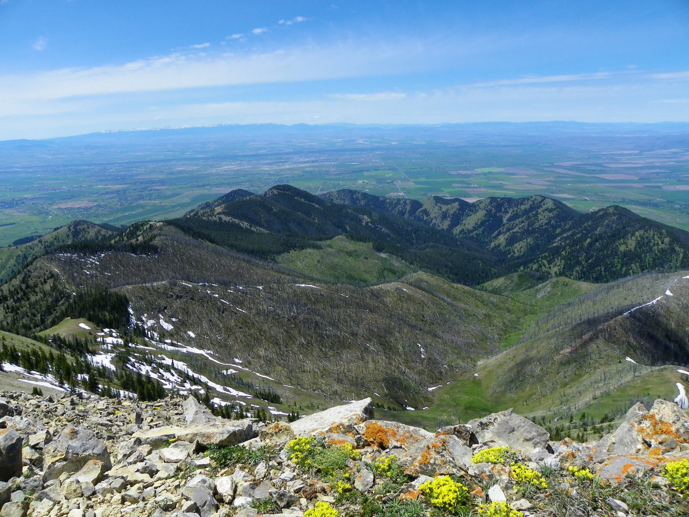

Bozeman, Montana
Gateway to the Rockies — World-Class Outdoors Meets Classical Christian Education

Overview
Bozeman is a college town turned mountain boomtown, nestled in the Gallatin Valley of southwestern Montana with the Bridger, Gallatin, and Spanish Peaks mountain ranges visible from nearly every street. Montana State University anchors the economy, but a growing tech sector -- Oracle, Workiva, Schedulicity, and dozens of startups -- has transformed Bozeman into a legitimate remote-work and tech hub, earning it the nickname "Silicon Prairie."
The outdoor recreation is extraordinary and arguably the strongest in the entire comparison set. Bridger Bowl and Big Sky Resort provide world-class skiing within 20-45 minutes. The Gallatin, Madison, and Yellowstone rivers offer some of the best fly fishing on earth. Yellowstone National Park is 90 minutes south. Hunting access across millions of acres of public land is unrivaled. Equestrian opportunities are excellent with ranches, BLM trails, and a deeply rooted western horse culture.
The education story centers on Petra Academy, an ACCS classical Christian school with a 27-year track record, 250 students on a 20-acre campus serving PK through 12th grade. This is a mature, established program -- not a startup. The Reformed church presence, however, is thin: four churches (1 PCA, 1 EPC, 1 CRC, 1 Reformed Baptist) with no OPC or CREC congregations. The tradeoff is cost -- $745K median home price and a cost of living index of 140 make Bozeman the most expensive city in the comparison set. Montana's no-sales-tax policy and median household income of $85,747 help offset this, but housing affordability is a real barrier.
Scores
How Bozeman ranks across all six evaluation categories (1-10 scale). Weighted overall: 6.45 / 10.
Cost of Living
Overall index 140 -- significantly above the national average, driven by housing costs and the Bozeman boom.
| Category | Index | Notes |
|---|---|---|
| Overall | 140 | 40% above national average |
| Housing | 195 | Primary cost driver; nearly double national avg |
| Transportation | 110 | Car-dependent, limited public transit |
| Groceries | 105 | Slightly above national average |
| Utilities | 95 | Below national average |
Top marginal rate
No sales tax in Montana
~$5,500 on a $745K home
Montana's zero sales tax is a genuine advantage -- every purchase, from groceries to vehicles, avoids the 6-10% tax levied in most other states. However, the state income tax tops out at 6.75%, which is moderate. Property taxes are reasonable at roughly 0.74% of assessed value. The median household income of $85,747 is above the national median, reflecting the tech sector and professional employment base. The core affordability challenge is housing: at $745K median, a family needs strong income or significant equity from a prior home sale to buy in Bozeman proper.
Housing and Land
Median home price $745K -- the most expensive in the comparison set, with more affordable options in surrounding communities.
Housing index ~195
Metro area ~115K
| Area | Price Range | Family Rating | Notes |
|---|---|---|---|
| Bozeman (city) | $650K-$900K+ | Good | Walkable downtown, close to MSU, highest prices |
| Belgrade | $450K-$600K | Good | 10 miles west, more affordable, growing rapidly, near airport |
| Gallatin Gateway | $500K-$800K+ | Excellent | South of Bozeman, larger lots, ranch properties, equestrian-friendly |
| Three Forks / Manhattan | $375K-$525K | Good | 25-30 min west, small-town feel, most affordable option, acreage available |
| Livingston | $425K-$600K | Good | 25 min east over Bozeman Pass, arts community, Yellowstone River access |
Land and Acreage
The Gallatin Valley offers genuine ranch and acreage properties, though prices have climbed sharply. Belgrade and the areas west of Bozeman along the I-90 corridor (Three Forks, Manhattan, Churchill) remain the most affordable options for families seeking land. Gallatin Gateway south of town is the premier equestrian corridor with established ranches, horse facilities, and direct access to National Forest trails. BLM and Forest Service land surrounding the valley provides virtually unlimited riding, hiking, and hunting access without needing to own massive acreage.
Montana's agricultural zoning is generally permissive for livestock. Many properties outside city limits allow horses without special permits. The western horse culture is deeply rooted here -- farriers, veterinarians, tack shops, and riding instruction are all readily available.
Education
Score: 8/10 -- Petra Academy is a standout ACCS school with 27 years of history and a 20-acre campus.
Classical Christian Schools
| School | Grades | Students | Campus | Notes |
|---|---|---|---|---|
| Petra Academy | PK-12 | 250 | 20 acres | ACCS member. Founded ~1999. Full classical curriculum with strong liberal arts, Latin, rhetoric. Established and mature program -- not a startup. One of the stronger ACCS schools in the Mountain West. |
Other Private Schools
| School | Grades | Notes |
|---|---|---|
| Montana Academy of Salish and Science | K-8 | Small private, inquiry-based |
| Headwaters Academy | 6-12 | Independent, small class sizes, outdoor education emphasis |
Homeschool Community
Montana has permissive homeschool laws -- parents must notify the county superintendent and provide instruction in required subjects, but there is no curriculum approval or standardized testing mandate. The Bozeman area has an active homeschool community supported by co-ops and Classical Conversations communities.
| Organization | Type | Notes |
|---|---|---|
| Classical Conversations - Bozeman | Classical Christian | Communities meeting in the Gallatin Valley |
| Gallatin Valley Homeschool Association | Support | Regional support network, field trips, co-op activities |
Notable Mention
Montana State University is located in Bozeman, providing access to college-level courses, cultural events, athletics, and a university library system. Public schools in Bozeman School District rate well, with strong graduation rates and extracurricular programs benefiting from the university town environment.
Faith
Score: 5/10 -- Four Reformed churches present but thin; no OPC or CREC. Broader evangelical community is moderate.
| Church | Denomination | Size | Notes |
|---|---|---|---|
| Trinity Reformed Church | PCA | Small-Medium | The primary confessionally Reformed option in Bozeman. Westminster Standards, expositional preaching. |
| Springhill Presbyterian Church | EPC | Medium | Evangelical Presbyterian Church. Reformed in heritage, broadly evangelical in practice. Family-oriented. |
| Bozeman CRC | CRC | Small | Christian Reformed Church. Three Forms of Unity confessional heritage. |
| Grace Bible Church | Reformed Baptist | Small | 1689 London Baptist Confession heritage. Expositional preaching, Reformed soteriology. |
The Reformed church presence in Bozeman is present but thin. Four congregations span PCA, EPC, CRC, and Reformed Baptist traditions, giving some denominational variety but none are large or deeply established institutions. There is no OPC or CREC congregation in the area, which may matter to families specifically seeking those traditions.
The broader evangelical community is moderate for a city of this size. Bozeman is a university town with a more politically mixed character than other Mountain West cities in this comparison (like Coeur d'Alene or Sheridan). Conservative Christian families are present and active, but Bozeman is not a destination for faith-driven migration in the way North Idaho is. The Christian community is genuine but does not dominate the civic culture the way it might in the Deep South or American Redoubt cities.
Lifestyle
Score: 9/10 -- Arguably the best outdoor recreation in the comparison set. Four seasons, world-class skiing and fly fishing.
Climate
| Season | High | Low | Character |
|---|---|---|---|
| Spring | 55F | 30F | Cool, variable, late snow possible into May |
| Summer | 82F | 50F | Warm days, cool nights, low humidity, spectacular |
| Fall | 55F | 30F | Crisp, golden aspens, hunting season, clear skies |
| Winter | 32F | 12F | Cold and snowy (91 inches annually), real mountain winter |
Significant mountain snowfall
Annual days of sunshine
Short commutes in a small city
Outdoor Recreation
| Activity | Quality | Details |
|---|---|---|
| Skiing | 5/5 | Bridger Bowl (20 min, local favorite), Big Sky Resort (45 min, world-class destination) |
| Hiking | 5/5 | Gallatin National Forest, Hyalite Canyon, Bridger Range, M Trail, hundreds of miles of trails |
| Fishing | 5/5 | World-class fly fishing: Gallatin, Madison, Yellowstone rivers. "A River Runs Through It" country. |
| Hunting | 5/5 | Elk, mule deer, whitetail, antelope, upland birds. Millions of acres of public land access. |
| Equestrian | 5/5 | Gallatin River Ranch, multiple stables, BLM trails, deeply rooted western horse culture |
North entrance via Gardiner, MT
MSU events, Museum of the Rockies, vibrant downtown
Community
Score: 7/10 -- Strong outdoor-oriented family community, growing tech hub, university town character.
Metro area ~115K
Above national median
More sun than you'd expect
| Factor | Rating |
|---|---|
| Family Friendliness | Good |
| Homeschool Community | Moderate |
| Conservative Presence | Moderate (mixed university town) |
| Small Town Feel | Yes (rapidly growing) |
| Remote Work Friendly | Very High |
Bozeman is a growing tech hub with a strong outdoor-oriented culture. Montana State University gives the city a youthful energy, and the tech sector (Oracle, remote workers, startups) has brought professional families with above-median incomes. The community is family-friendly and active -- organized around skiing, fishing, hiking, and ranch life rather than political or religious identity.
Unlike Coeur d'Alene or Moscow, Bozeman is not a faith-driven migration destination. The political character is mixed: Gallatin County leans moderate to slightly left by Montana standards (university influence), though the surrounding rural areas are solidly conservative. Conservative Christian families are present and welcomed, but they don't define the civic culture the way they might in the American Redoubt cities.
The Bozeman Yellowstone International Airport (BZN) is the busiest airport in Montana, with direct flights to major hubs. Healthcare is provided by Bozeman Health Deaconess Hospital. The downtown is walkable and vibrant with restaurants, shops, and a genuine small-town main street -- though growth is rapidly changing the character of the area.
Pros and Cons
Advantages
- Arguably the best outdoor recreation in the comparison set: world-class skiing, fly fishing, hiking, hunting, and equestrian all rated 5/5
- Petra Academy is a mature, 27-year ACCS classical Christian school with 250 students on a 20-acre campus
- No sales tax in Montana -- significant savings on all purchases
- Yellowstone National Park 90 minutes away; Bridger Bowl skiing 20 minutes
- Growing tech hub with above-median household income ($85,747) and strong remote work culture
- Excellent equestrian opportunities: Gallatin River Ranch, multiple stables, BLM and Forest Service trails
- 188 sunny days per year -- more sun than most Mountain West competitors
- Bozeman Yellowstone International Airport with direct flights to major hubs
Disadvantages
- Median home price of $745K is the most expensive in the comparison set -- significant affordability barrier
- Cost of living index 140 -- 40% above national average, primarily driven by housing
- Reformed church presence is thin: 4 churches, no OPC or CREC, none are large institutions
- 91 inches of annual snowfall with winter lows averaging 12F -- serious mountain winters
- 6.75% top marginal income tax rate is higher than many comparison states
- University town political character is mixed -- not a distinctly conservative community
- Rapid growth changing small-town character; longtime residents note cultural tension with newcomers
- Smaller metro (115K) means limited healthcare, shopping, and cultural amenities compared to larger cities
External Links
| Resource | Link |
|---|---|
| City of Bozeman | bozeman.net |
| Petra Academy | petraacademy.com |
| Bridger Bowl | bridgerbowl.com |
| Big Sky Resort | bigskyresort.com |
| Gallatin County | gallatin.mt.gov |
| Bozeman Chamber of Commerce | bozemanchamber.com |